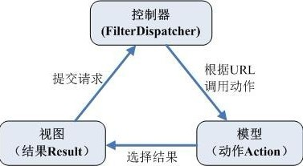

| MVC模式概念 | MVC的全名是Model View Controller，是模型(model)－视图(view)－控制器(controller)的缩写，是一种软件设计典范 | ||
| 编号 | 架构技术 | 解释 | 备注 |
| 1 | javabean+jsp+servlet |
JavaBean作为模型，既可以作为数据模型来封装业务数据，又可以作为业务逻辑模型来包含应用的业务操作。其中，数据模型用来存储或传递业务数据，而业务逻辑模型接收到控制器传过来的模型更新请求后，执行特定的业务逻辑处理，然后返回相应的执行结果。
JSP作为表现层，负责提供页面为用户展示数据，提供相应的表单（Form）来用于用户的请求，并在适当的时候（点击按钮）向控制器发出请求来请求模型进行更新。 Serlvet作为控制器，用来接收用户提交的请求，然后获取请求中的数据，将之转换为业务模型需要的数据模型，然后调用业务模型相应的业务方法进行更新，同时根据业务执行结果来选择要返回的视图。 |
备注 |
| 2 | struts2+spring+hibernate |
Struts2是一种基于MVC的Web应用框架，下面看看Struts2和MVC的关系。

控制器——FilterDispatcher
用户请求首先到达前端控制器FilterDispatcher。FilterDispatcher负责根据用户提交的URL和struts.xml中的配置，来选择合适的动作(Action)，让这个Action来处理用户的请求。
FilterDispatcher其实是一个过滤器（Filter，servlet规范中的一种web组件），它是Struts2核心包里已经做好的类，不需要我们去开发，只是要在项目的web.xml中配置一下即可。
FilterDispatcher体现了J2EE核心设计模式中的前端控制器模式。
动作——Action
在用户请求经过FilterDispatcher之后，被分发到了合适的动作Action对象。Action负责把用户请求中的参数组装成合适的数据模型，
并调用相应的业务逻辑进行真正的功能处理，获取下一个视图展示所需要的数据。Struts2 的Action，相比于别的web框架的动作处理，
它实现了与Servlet API的解耦，使得Action里面不需要再直接去引用和使用HttpServletRequest与HttpServletResponse等接口。
因而使得Action的单元测试更加简单，而且强大的类型转换也使得我们少做了很多重复的工作。
视图——Result
视图结果用来把动作中获取到的数据展现给用户。在Struts2中有多种优秀的结果展示方式，常规的jsp，
模板 freemarker、velocity，还有各种其它专业的展示方式，如图表jfreechart、报表JasperReports、
将XML转化为 HTML的XSLT等等。而且各种视图结果在同一个工程里面可以混合出现。
|
备注 |
| 3 | spring mvc+spring+mybatis | 解释 | 备注 |
| struts2 与 spring mvc对比 |
1、机制 spring mvc 和 struts2的加载机制不同：spring mvc的入口是servlet，而struts2是filter； 2、性能 spring mvc 在性能上会稍微比struts2快。 sturts2是基于类的设计，是类级别的拦截，每次发一次请求都会实例一个action，然后调用setter getter方法把 request中的数据注入，struts2实际上是通过setter getter方法与request打交道的，struts2中，一个Action对象对应 一个request上下文； spring mvc是基于方法的设计，粒度更细，是方法级别的拦截，拦截到方法后根据参数上的注解，把request数据注入进 去，在spring mvc中，一个方法对应一个request上下文； 3、参数传递 struts2在接受参数的时候，可以用成员属性来接受参数，这就说明参数是让多个方法共享的，即其类属性却所有方法共享； spring mvc的方法之间基本上独立的，独享request response数据，请求数据通过参数获取，处理结果通过ModelMap交回给框架，方法之间不共享变量； 4、框架集成 spring MVC和Spring是无缝(无缝：无须数据格式转换，直接访问来自数据源数据格式)的。从这个项目的管理和安全上也比Struts2高； 5、数据验证 SpringMVC验证支持JSR303(一种数据验证的规范)，处理起来相对更加灵活方便，而Struts2验证比较繁琐； 6、Ajax交互 spring mvc处理ajax的请求十分方便，只需一个注解@ResponseBody ，然后直接返回响应文本即可； Struts2拦截器集成了Ajax，在Action中处理时一般必须安装插件或者自己写代码集成进去，使用起来也相对不方便； 7、拦截机制的实现 spring mvc用的是独立的AOP方式实现，而struts2有自己的interceptor机制，这样导致了struts2的配置文件量又比spring mvc大； 8、RESTful架构的实现 spring mvc是方法级别的拦截，一个方法对应一个request上下文，而方法同时又跟一个url对应，所以说从架构本身上spring mvc就容易实现restful url； struts2是类级别的拦截，一个类对应一个request上下文，struts2 action的一个方法可以对应一个url；而其类属性却被所有方法共享，这也就无法用注解或其他方式标识其所属方法了，所以实现restful url比较费劲 |
||
| MVC模式优点 |
1.耦合性低
2.重用性高
3.部署快，生命周期成本低
4.可维护性高
|
||
| MVC模式缺点 |
1.完全理解MVC比较复杂。
2.调试困难。
3.不适合小型，中等规模的应用程序
4.增加系统结构和实现的复杂性
5.视图与控制器间的过于紧密的连接并且降低了视图对模型数据的访问
|
||